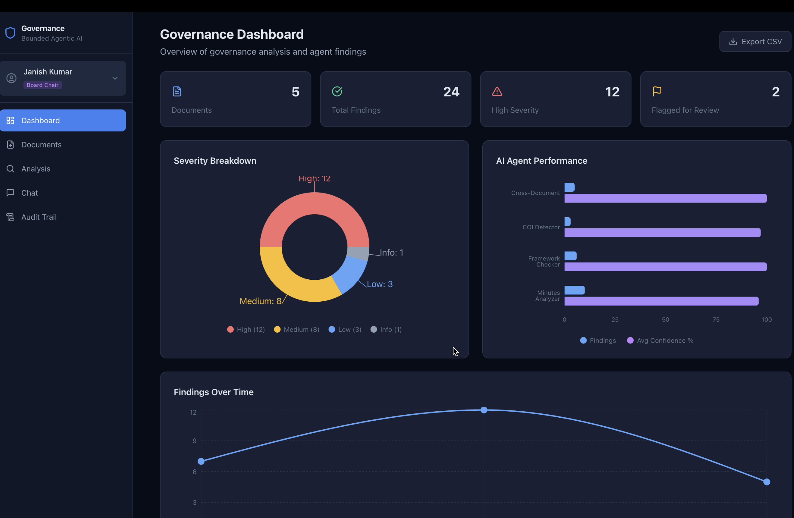
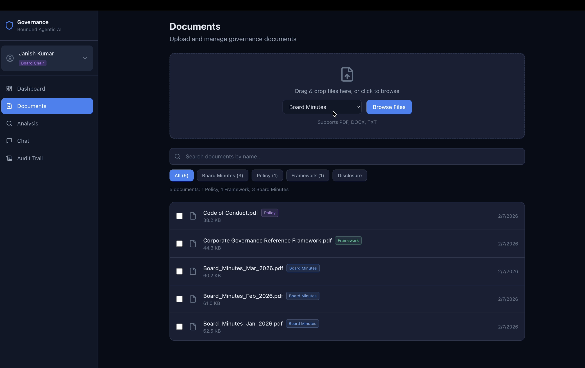
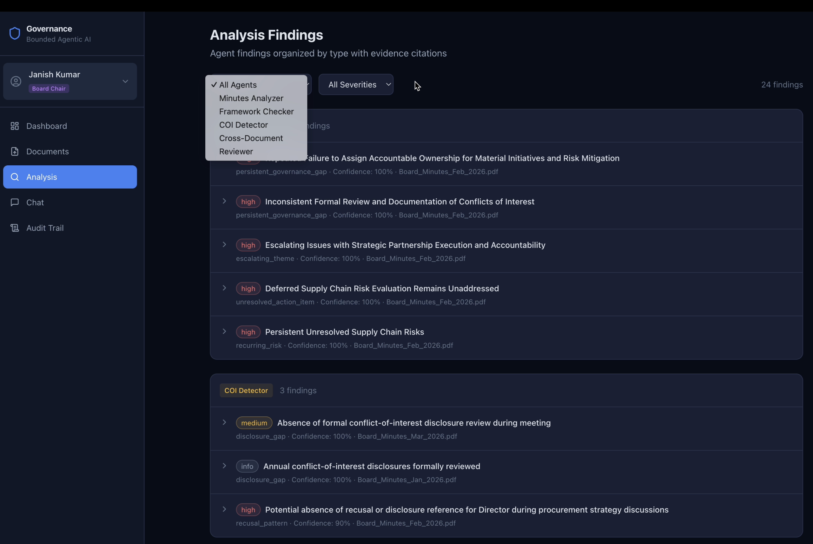
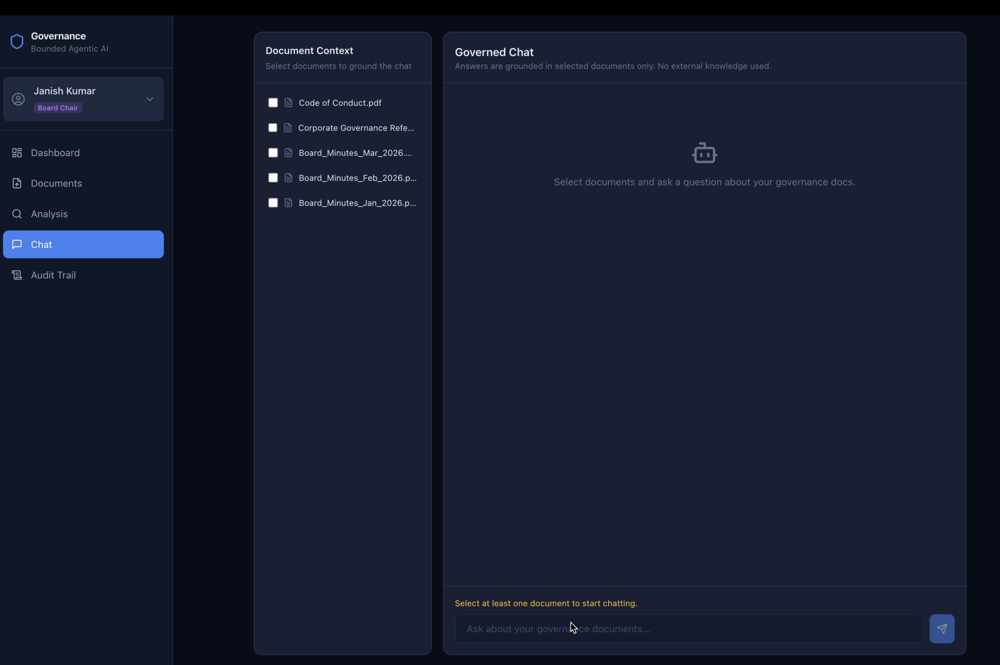
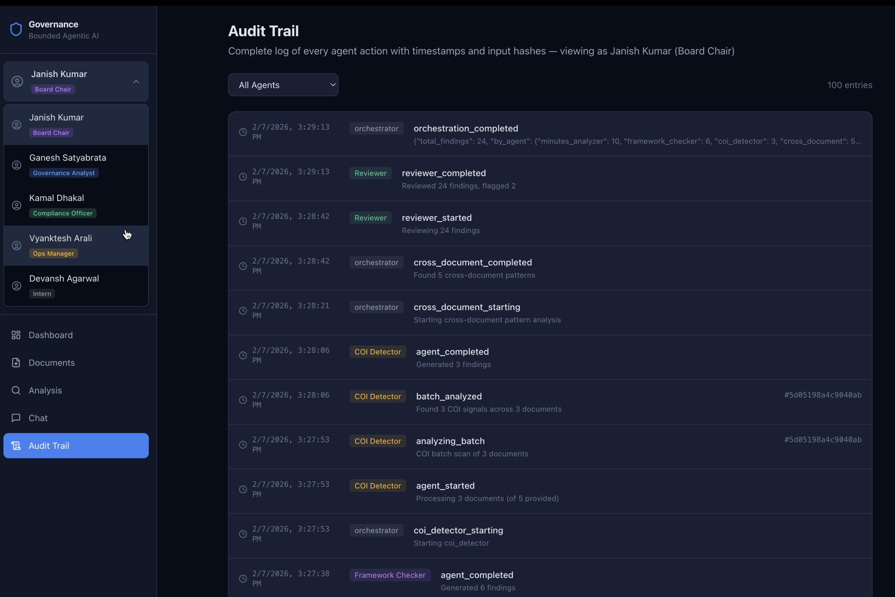

Bounded Governance AI
Bounded agentic governance analysis for board minutes and governance documents. Evidence-linked outputs, role boundaries, and audit trails.
Most AI governance demos focus on model capability first and controls second. This project starts from the opposite direction. The requirement is simple: if an assistant helps review board minutes, policy documents, and conflict disclosures, every claim must point to evidence, every action must be attributable, and every agent must stay within an explicit boundary.
Bounded Governance AI is an active prototype for that problem. It combines a Next.js frontend, a FastAPI backend, async SQLite persistence, and a coordinated set of Gemini-powered agents. The key design decision is not just multi-agent orchestration. It is bounded orchestration: each agent gets a defined document scope, constrained output responsibilities, and a review path when findings are weak or ambiguous.
Architecture
One workflow, several constrained agents
The analysis workflow is organized around specialized agents. A Minutes Analyzer extracts decisions, risks, and action items from board minutes. A Framework Checker compares governance behavior against policy and reference framework documents. A COI Detector looks for potential conflict-of-interest signals and is instructed to stay non-accusatory in tone. An orchestrator coordinates these passes and persists outputs as structured findings.
After the first pass, a reviewer step re-checks finding quality: does the quote support the claim, is the confidence proportionate to evidence, and is the language clear enough for human follow-up. A separate cross-document pass looks for recurring risks and unresolved themes across multiple meetings. This gives a compact example of agent specialization plus post-processing guardrails in one end-to-end system.

Controls
Boundaries in two layers: role access and agent scope
The control model is split into two layers. First is user-facing RBAC. The prototype includes roles like Board Chair, Governance Analyst, Compliance Officer, Ops Manager, and Intern, each with different permissions for upload, analysis, chat, findings review, and audit visibility. Second is agent-level scope control through an access matrix: each agent can only read the document categories assigned to it.
This separation matters. User permissions determine what actions someone can initiate. Agent permissions determine what information an automated step can touch after that action starts. Even in a prototype, that distinction makes the system easier to reason about and test. It also reduces the chance of accidental overreach when prompts or workflows evolve.

Traceability
Evidence-linked findings and full audit trail
Findings are stored with title, type, severity, confidence, source document, and evidence quote. The interface keeps these fields visible so reviewers can inspect why a result exists before acting on it. For roles that allow it, findings can be marked verified or disputed, which keeps the human decision trail near the model output rather than in external notes.
Alongside findings, the backend records agent actions in an audit log with timestamps and summaries. In practice, this means the prototype can answer two operational questions: what did the system conclude, and what sequence produced that conclusion. For governance-oriented use cases, that auditability requirement is as important as model quality.

Status
Active prototype and next steps
The current implementation runs as a local Dockerized stack with a multi-page web interface for documents, findings, governed chat, dashboard views, and audit logs. It is intentionally framed as active development: the goal is to validate design choices around bounded access, evidence discipline, and review workflows before claiming production readiness.
The next stage is to harden evaluation and expand operational checks around false positives, reviewer burden, and role-specific usability. For now, the contribution is a working reference for bounded agentic design in governance analysis: practical enough to run end to end, constrained enough to inspect, and explicit enough to critique.

